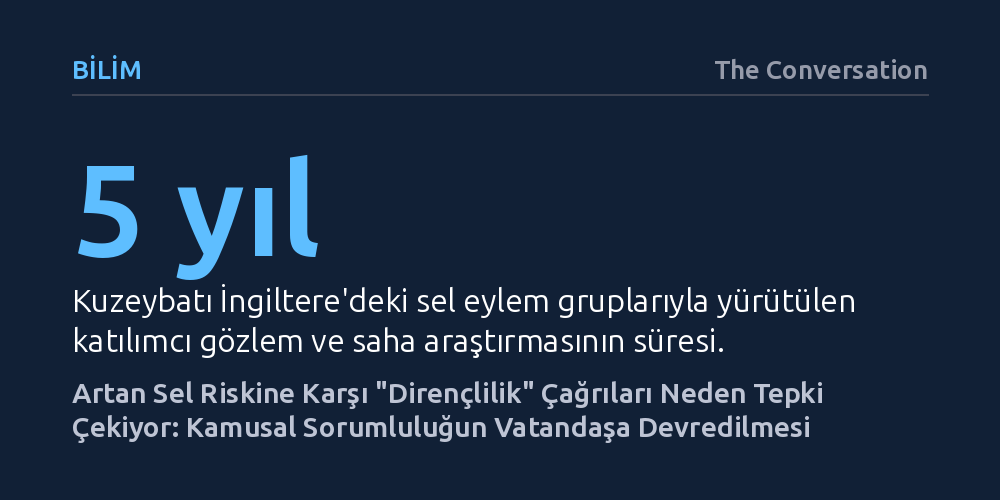

BILIM · The Conversation · 2026-10-24
İngiltere'de yürütülen beş yıllık araştırma, artan sel baskınlarına karşı halka yapılan "dirençli olun" çağrılarının tepkiyle karşılandığını gösteriyor. Bölge sakinleri bu yaklaşımı, kamu kurumlarının altyapı yatırımı sorumluluğundan kaçarak yükü bireylere yıkması olarak değerlendiriyor.
İklim krizine uyumda sıkça övülen "bireysel dirençlilik" kavramının, kamu yatırımı ve kurumsal hesap verebilirlik eksikliğinde devletin sorumluluktan kaçış kılıfına dönüşebileceğini gösteriyor.

İklim kriziyle birlikte Birleşik Krallık genelinde sel olaylarının sıklığı ve yıkıcılığı hızla artıyor. Yirminci yüzyıl boyunca sel yönetimi anlayışına, insanları ve mülkleri korumak için inşa edilen devasa bentler, su tahliye kanalları ve karmaşık mühendislik yapıları yön veriyordu. Bu geleneksel koruma yaklaşımı günümüzde de sürse de, politika yapıcılar ve resmi kurumlar artık taşkınların bir ölçüde kaçınılmaz olduğunu kabul ediyor. Bu kabulleniş, stratejinin merkezine halkın "suyla birlikte yaşaması" ve afetlere karşı direnç geliştirmesi gerektiği fikrini yerleştiriyor.
Bu politika değişimiyle birlikte ev sahiplerine ve yerel sakinlere somut sorumluluklar yükleniyor. Vatandaşlardan kapılarına sel bariyerleri taktırmaları, zemin kaplamalarını taşkına dayanıklı malzemelerle değiştirmeleri, suya dayanıklı mutfak ve mobilyalar kullanmaları isteniyor. Ayrıca erken uyarı sistemlerine kaydolmak, özel sigorta poliçeleri yaptırmak ve su seviyesi yükseldiğinde uygulanacak acil durum tahliye planları hazırlamak da bireylerden beklenen temel önlemler arasında sıralanıyor.
Kağıt üzerinde afetlerden hızla toparlanabilen topluluklar yaratma fikri akla yatkın görünse de, sahadaki gerçeklik çok farklı bir tablo ortaya koyuyor. Kuzeybatı İngiltere'de sel tehdidi altındaki bölgelerde faaliyet gösteren üç yerel eylem grubuyla beş yıl boyunca yürütülen araştırma, toplulukların bu yaklaşımdan derin bir rahatsızlık duyduğunu belgeliyor. Toplam on yedi derinlemesine mülakat ve uzun süreli katılımcı gözleme dayanan çalışma, bazı yerel grupların bu "dirençli olma" çağrılarını bütünüyle reddettiğini gösteriyor.
Bölge sakinleri, özellikle mülk düzeyinde alınması istenen bireysel önlemleri kalıcı çözümler yerine sorunun üzerini örten birer yara bandı olarak görüyor. Halk, suyun yol açtığı yapısal tehlikeler ortadan kaldırılmadan bireylerin tek başına korunmaya zorlanmasına güvenmiyor. Nitekim incelenen sel eylem gruplarından birinin lideri bu durumu şu sözlerle dile getiriyor: "İnsanlar toprağa kürek vurulduğunu, savunma hatlarının inşa edildiğini görmek istiyor."
Dirençlilik kavramına duyulan bu toplumsal güvensizlik nedensiz değil. Selden etkilenen toplulukların önemli bir bölümü, uzun süredir kamu hizmetlerindeki kısıtlamaların ve yerel yönetim bütçelerindeki ciddi daralmaların yarattığı baskı altında yaşıyor. Yerel idarelerin bütçesizlik nedeniyle altyapıyı güçlendiremediği bir ortamda yurttaşlara sürekli "dirençli olun" denmesi, geçmişte kolektif olarak çözülen sorunların faturasını bireylere çıkarma girişimi olarak okunuyor.
Dolayısıyla uzmanlarca tarafsız ve teknik bir uyum aracı gibi sunulan dirençlilik, aslında iktidar ve sorumluluk paylaşımının tartışıldığı son derece politik bir alana dönüşmüş durumda. Mahalle sakinleri uzman tavsiyelerini sorgusuz sualsiz kabul etmek yerine yetkililerle yüzleşiyor, imar ve planlama kararlarına itiraz ediyor ve sel güvenliği için kamu kaynaklarının tahsis edilmesini talep ediyor.
Araştırmanın en kritik tespiti, yerel toplulukların iklim krizine uyum sağlamayı reddetmediği gerçeği. İtiraz edilen nokta, uyumun gerekliliği değil; devletin ve kurumların geri çekilerek vatandaşları suyun yıkıcı sonuçlarıyla baş başa bırakması. Dirençlilik söylemi, kamu yatırımlarının, altyapı projelerinin ve kurumsal hesap verebilirliğin üzerini örten ucuz bir ikameye dönüştüğünde meşruiyetini yitiriyor.
İklim değişikliğine uyumun başarıya ulaşması, dirençliliğin bireysel bir zorunluluk olmaktan çıkarılıp paylaşılan bir sorumluluk olarak kurgulanmasına bağlı. Bu da ancak yerel yönetimler, çevre ajansları ve mahalle örgütlerinin eşit ortaklar olarak birlikte hareket ettiği, kamusal finansmanla desteklenen katılımcı bir modelle sağlanabilir.